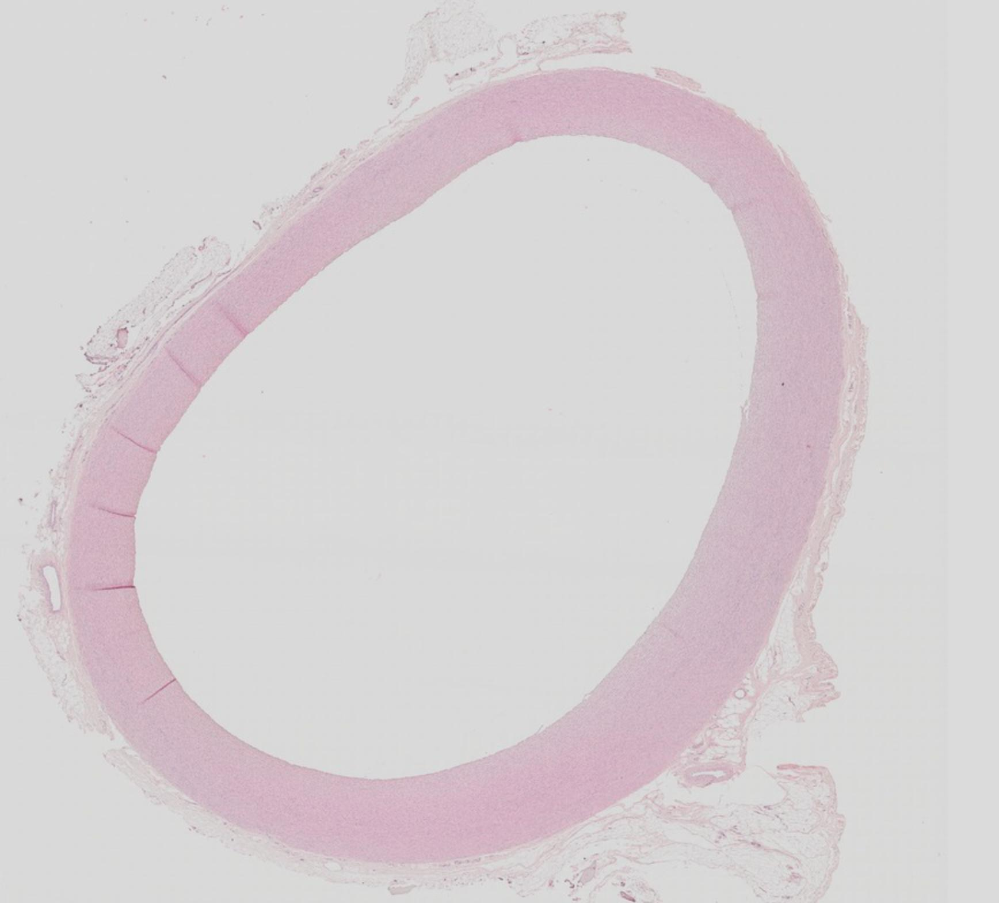
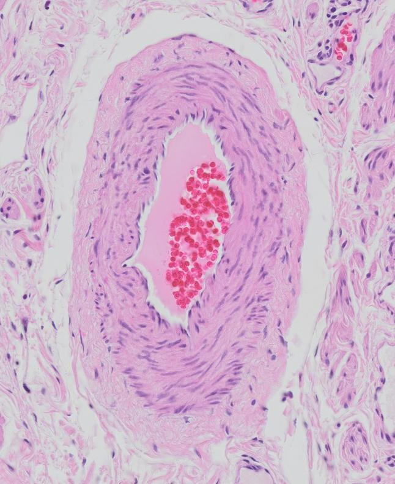

| Elastiske arterier |
> 10 mm |
Udglatte tryk systolisk-diastolisk |
- Endotel
- BV
- Lidt glat muskulatur
|
- Fenestrerede elastiske membraner
- Glatte muskelceller
- Elastiske og kollagene fibre
-
Lamina elastica interna/externa
|
- Tyndt lag løst BV
-
Vasa vasorum
|

|
| Muskulære arterier |
0,1–10 mm |
Regulerer blodtilførsel til organer |
- Endotel
- Evt. subendotelialt BV
|
- Glat muskulatur
-
Lamina elastica interna
- Elastiske og kollagene fibre
- Evt. mangler
lamina elastica externa
|
- Tykt lag løst BV
-
Vasa vasorum
- Nerver (nervi vasorum)
|

|
| Arterioler |
10–100 µm |
- Regulerer blodtrykket
- Sænker trykket før blodet når kapillærer
|
Endotel |
1-3 lag glatte muskelceller |
Løst BV |
BILLEDE |
| Kapillærer |
4–10 µm |
Stoftransport |
|
Ingen |
Ingen |
BILLEDE |
| Postkapillære venoler |
10–50 µm |
- Stoftransport
- Blodceller kan forlade blodbanen
|
- Endotel
- Evt. pericytter (sjældent)
|
Ingen |
Ingen |
BILLEDE |
| Muskulære venoler |
50–100 µm |
Samle blod fra kapillærnetværk |
Endotel |
1-2 lag glatte muskelceller |
Evt. tyndt lag løst BV |
BILLEDE |
| Små/mellemstore vener |
0,1–10 mm |
Transporterer blod tilbage til hjertet |
- Endotel
- Evt. subendotelialt BV
|
3-4 lag glatte muskelceller |
Tykt lag løst BV |
BILLEDE |
| Store vener |
> 10 mm |
Transporterer blod tilbage til hjertet |
|
Er tynd, kan evt. mangle helt |
- Glat muskulatur (længde)
-
Vasa vasorum
|
Geneser |
| Lymfekapillær |
≤ 100 µm |
Transporterer væske, antistoffer, immunceller |
Endotel |
Ingen |
Ingen |
Billede |
{kind=link}
{kind=link}
{kind=link}
{kind=link}
{kind=link}
{kind=link}
{kind=link}